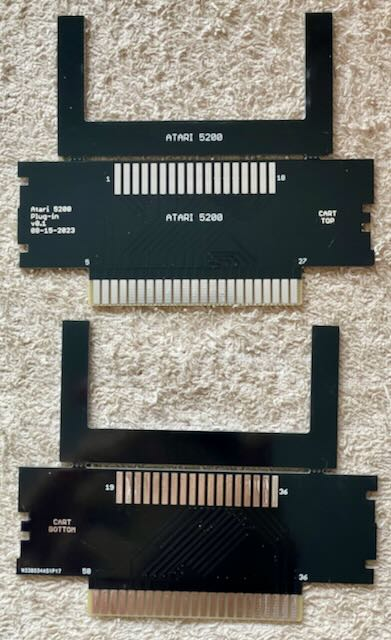
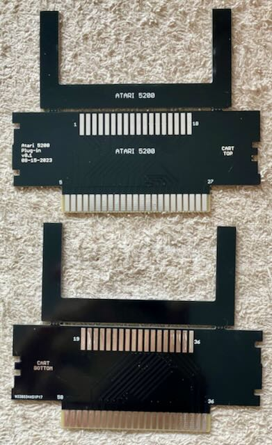
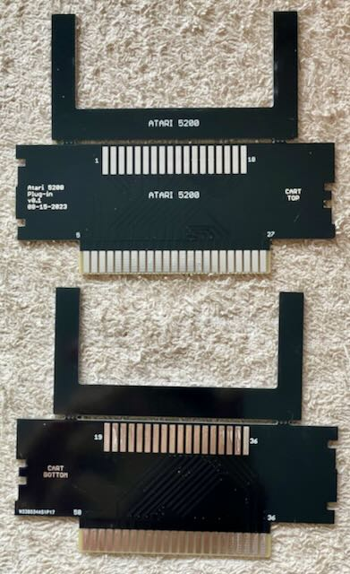

Mit diesem Adapter kann man Atari 5200 Module mit dem Open Source Card Reader auslesen.
Da der Adapter in die SNES Buchse passen soll, ist die Platine 1.2" dick.
| Komponente | Anzahl | Preis | Anbieter |
| Platine | 1 | €1.00 | |
| 2x18 Edge Buchse | 1 | — | |
| nur Platine | €1.00 |